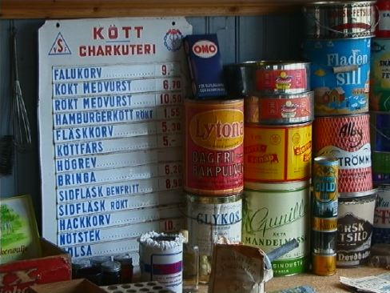

Uppgifter
- När gällde priserna ovan? Använd de kunskaper du har om konsumentprisindex (KPI), eller lär dig det du behöver, för att försöka besvara frågan.
- Välj en av de prissatta varorna ovan. Ta reda på KPI för de senaste åren och försök förutsäga vad varan troligtvis kommer att kosta om ett år.
Det är viktigt att din skriftliga redovisning går att följa och att du anger varifrån du hämtat olika uppgifter så att man kan jämföra och värdera olika argument.
PDL, Luspengymnasiet, Skolgatan 20, 923 81 Storuman
Senast ändrad: tor 15 feb 2001 20.39.09.